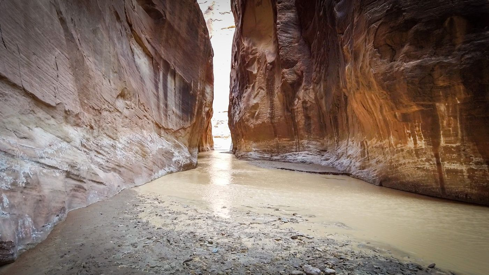

Walk downstream from the White House trailhead in Utah to Lees Ferry in Arizona: 38 miles of river canyon with no road access in between, usually done in five days and four nights at 8 to 12 miles a day. You wade for at least 20 of those miles. You need a Bureau of Land Management overnight permit. Only 20 people a day may enter, and permits go on sale at noon on the 1st of the month, three months ahead. This is a trip for seasoned hikers, not a first backpack.
- Where
- Paria Canyon-Vermilion Cliffs Wilderness, on the Utah and Arizona border between Kanab and Page. Bureau of Land Management.
- Route
- White House trailhead to Lees Ferry, one way. 38 miles, and up to 50 with side trips.
- Time
- 5 trail days and 4 nights, 8 to 12 miles a day.
- Difficulty
- 7 of 10 on Dreamland's scale. For seasoned hikers in excellent shape. Prior backpacking experience strongly recommended.
- Terrain
- River bottom. Wading from ankle deep to waist deep, silt, mud and quicksand.
- When we go
- Spring and fall, outside the summer monsoon.
- Permit
- Required. 20 people a day. See below.
What is Paria Canyon like?
On a map it does not look like much. The elevation profile is close to flat: a 38-mile ribbon of river bottom that trends gently downhill. People glance at the numbers and expect a casual stroll. It is not a casual stroll.
The Paria is a water hike through a desert canyon. For at least 20 of the 38 miles you're wading through an opaque, silty river with a full pack. The footing is uneven, you can't see it, and it changes with every flood. Your shoes are wet from the first step until you take them off at Lees Ferry. The temperature can swing 50 degrees between midday and midnight.
What you get in return is rare. You find swimming holes and small waterfalls in the middle of a desert. You meet real quicksand, the kind where your foot sinks and a partner helps pull you out. You pass petroglyphs older than anything in your frame of reference. I live 45 minutes from the trailhead and have walked, run and waded this canyon more times than I can count. It still surprises me every time.

What does the trip look like, day by day?
This is the plan we follow on our guided trips.
- Trail day 1: White House into the narrows. Drive from Kanab to the White House trailhead. About 8 miles to a camp near the Paria narrows.
- Trail days 2 to 4: down the river. 7 to 10 miles a day, with side visits to Buckskin Gulch, Wrather Arch and more. We camp at the confluence where Buckskin Gulch meets the Paria, spend a morning exploring up the gulch, then continue downriver toward Big Spring.
- Trail day 5: out to Lees Ferry. 10 to 12 miles to the Colorado River.
What permit do I need, and how do I get it?
These are the Bureau of Land Management's rules as of November 24, 2026, when we last checked them. Rules and fees change, so read the agency page before you plan.
| Question | Answer |
|---|---|
| Who needs a permit? | Everyone. Overnight trips need a permit reserved in advance, online. Permits aren't sold on the day of the hike or the day before. |
| How many? | 20 people a day may enter for overnight trips. That's the total across all four trailheads: Wire Pass, White House, Buckskin Gulch and Lees Ferry. Dogs don't count against it. |
| When do they go on sale? | At 12 noon on the 1st of each month, for the month three months ahead: January 1 for April, February 1 for May, September 1 for December. |
| What does it cost? | $5 per person per day, and $5 per dog per day. |
| How big can my group be? | 10 people. A larger party must split and enter on separate days. |
| How do I collect it? | In person, no sooner than 10 days before the trip, with government-issued identification. Pickup points are the Paria Contact Station on Highway 89 (open March 15 to November 15), the Kanab Field Office (November 16 to March 14) and the district office in St. George. |
| Can I change it? | You can change trailheads and group members. You can't change the entry date, and nothing can be changed within two weeks of it. No refunds and no rain checks. |
| Where do I show it? | On the outside of your backpack and on your vehicle's dashboard. |
Permits go quickly. Be online at noon Utah time on the day they open.
Rules inside the canyon
- Human waste bags are required throughout Buckskin Gulch and Paria Canyon. Pack out all trash, toilet paper and used bags.
- No campfires.
- Camp at existing sites, at least 200 feet from a water source.
- No camping on or next to any archaeological site. Wrather Canyon is closed to camping.
- Dogs are allowed if they're on the permit. Pack out their waste.
- No drones.
How serious is the flood risk?
Serious enough to decide whether you go. The Paria at Lees Ferry drains 1,411 square miles, most of it far out of sight.
- Any flood that hits Buckskin Gulch flows into the Paria. If Buckskin is at risk, so is the Paria below the confluence.
- The Paria's catchment reaches farther east than Buckskin's, so the Paria can flood when Buckskin doesn't.
- The Paria narrows are shorter and wider than Buckskin's and offer more ways to reach higher ground. We rate the risk severe to moderate, depending on where in the canyon you are. Buckskin's is extreme.
- The river has two USGS gauges, one above the Buckskin confluence and one at Lees Ferry. A big flood at the upper gauge takes seven to nine hours to reach Lees Ferry.
Before you go, read how to judge a canyon for flash floods and check the Paria and Buckskin flood monitor, which shows both gauges and the basin rain forecast. If rain is in the forecast, it may be unsafe to enter. Have a backup trip ready and be willing to use it.
One lesson from my own trips: water doesn't only come down the main river. At a final camp one evening the sky opened, and a waterfall appeared off the cliff a quarter mile upstream and ran straight through our camp. We spent two hours moving tents to higher ground in the dark. We had expected the river to rise. We hadn't expected water from that direction.
What about water, feet and cold?
- Drinking water. The river is silty. Let the water settle so the sediment drops out, then treat it. On our trips each person carries four liters.
- Feet. Synthetic shoes that aren't waterproof, thin socks, and a rinse at every long break. Shoes for water hiking has the details. Trekking poles are mandatory on our water hikes.
- Cold. On a winter trip the air at the bottom of the canyon dropped to 15°F and our boots froze solid overnight.
How do I get to the trailheads?
The route is one way, so you need a vehicle at each end or a shuttle. Plan on a long drive between them.
- White House: from Kanab, 45.5 miles east on Highway 89. Turn right at the Paria Contact Station and follow the gravel road south for about 2 miles.
- Lees Ferry: from Kanab, 82.5 miles on Highway 89A over the Kaibab Plateau, about an hour and a half. It's much closer to Page, Arizona.
Go with a guide
Our guided Paria Canyon trip is five trail days, with an arrival day before and a departure day after. That makes seven calendar days.
- Arrival day: gear check at 5pm in Kanab, then a team dinner.
- Trail days 1 to 5: the plan above. We drive you from Kanab to White House and collect you at Lees Ferry, and the team has dinner together in Kanab after the walk out.
- Departure day: you head home.
- The gear check and both team dinners are part of the trip for every guest. Hotel nights in Kanab, before the first trail day and after the last, are an optional add-on.
- We arrange the overnight permits, which are hard to get.
- One guide for every five guests. At least one guide is a certified Wilderness First Responder, and the team carries a satellite messenger.
- Meals, kitchen, water treatment and waste bags are included. If you don't own a backpack, sleeping bag or sleeping pad, we can supply them.
- If flood risk makes the Paria unsafe, we move the trip to a backup route of similar difficulty. A reroute doesn't come with a refund.
- Private trips and shorter itineraries are available on request.
Sources
- Dreamland Safari Tours, Paria Canyon Backpack trip page, read November 24, 2026.
- Sunny Stroeer, A Love Letter to Paria Canyon.
- Bureau of Land Management, Paria Canyon / Vermilion Cliffs Wilderness permits, read November 24, 2026.
- Sunny Stroeer, Assessing flash flood potential in Buckskin Gulch, July 7, 2023, and Dreamland Safari Tours, Peekaboo Slot Canyon in the Rain, October 28, 2026 (flood risk and gauges).
- Andrea Jasper, Hiking Buckskin Gulch, October 4, 2020 (trailhead directions).